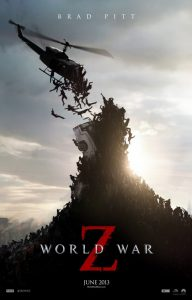
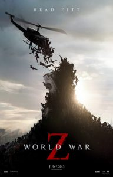
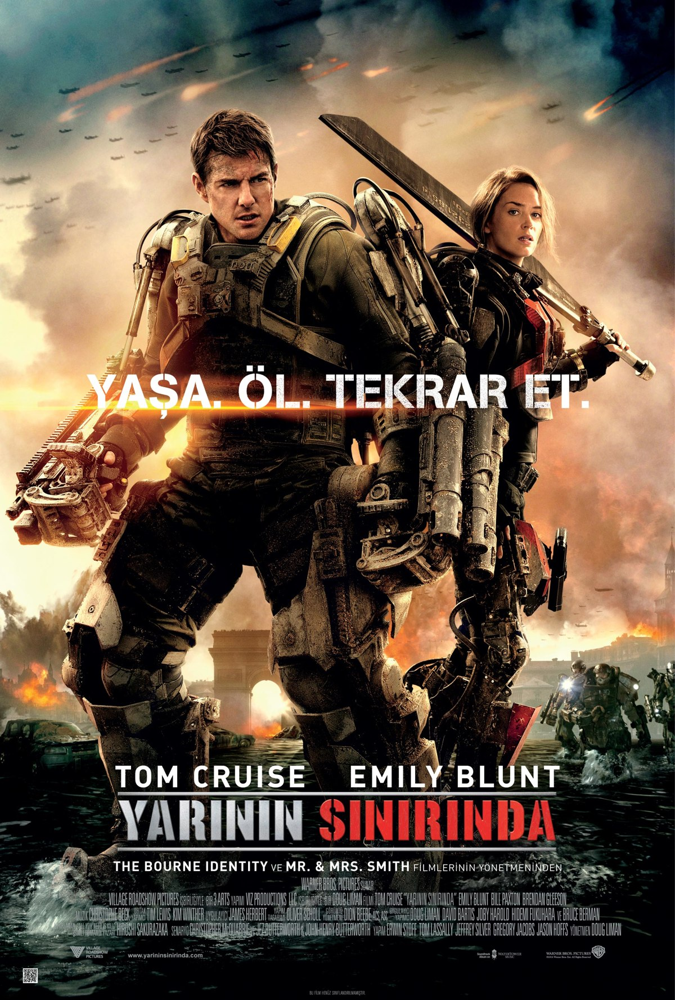
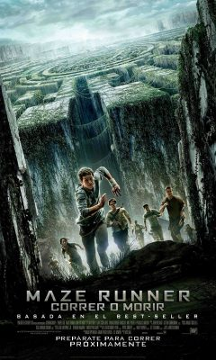
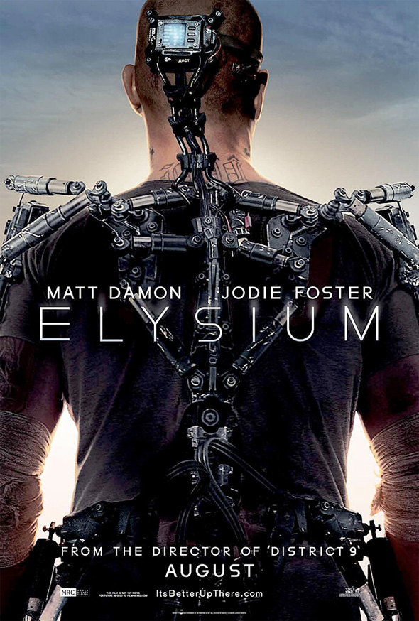

En İyi 10 Bilim Kurgu Filmi
1. Interstellar
Yönetmen: Christopher Nolan
IMDB: 8,8
Film, Fizikçi Kip S. Thorne’nun evrendeki ‘Solucan Delikleri’ teorisinden ilham alınarak yapılmıştır. Geçimini çiftçilik yaparak sağlan Cooper 2 çocuğunu en iyi şekilde yaşatmaya çalışır. 10 yaşındaki kızı Murph doğaüstü bir zekaya sahiptir. Bir gün Cooper’a sunulan teklifle her şey değişir. Bir dizi bilim insanı ile uzun bir yolculuğa çıkması gerekmektedir. Yaşanılabilir başka bir gezegen bulmak için yola koyulan Cooper ve arkadaşlarını gittiği yer gezegende farklı zorluklar beklemektedir. Akıl karıştıran ve dikkatle takip edilmesi gereken bir film.

2. Oblivion
Yönetmen: Joseph Kosinski
IMDB: 7,0
İnsanlık Scavs tehdidiyle uzun bir savaş yaşamıştır. Jack Harper yerden kilometrelerce yukarıda görevlendirilmiş bir uçak tamircisidir. Görevi bitmek üzereyken dünyaya bir uzay aracı düşer ve Jack uzay aracından bir kadını kurtarır. Bu kadın Jack’in gerçekleri öğrenmesine ve bildiklerini sorgulamasına neden olur. Aslında gerçekler çok farklıdır.

3. Dünyalar Savaşı Z
Yönetmen: Marc Forster
IMDB: 7,0
Güney Kore’den ortaya çıkan ve yayılan bir virüs insanları hızla ölüler haline getirmektedir. Gerry Lane ve ailesi araçlarıyla trafikte sıkışıp kaldığı sırada hızla yaklaşan tehlikenin farkına varmıştır. Ailesini güvenli bir yere yerleştiren Gerry’nin insanlığı kurtarmak için dünyayı dolaşması gerekmektedir. Zamana karşı bir yarış ve hastalığa karşı sıradışı bir savaşı anlatan bir film.
 

4. Yarının Sınırında
Yönetmen: Doug Liman
IMDB: 8,1
İnsanlık bir uzaylı ırkıyla savaş halindedir. Hiç bir savaşa katılmamış olan Çavuş olan Bill Cage aniden rütbesi düşürülünce kendini savaşın ortasında bulur. Cage savaş meydanında bir kaç dakika içinde ölür. Kendisiyle birlikte bir Alpha’yı da öldürmüştür. Ancak Cage bir anda kendini öldüğü günün başlangıcında bulur. Alpha ile fiziksel temas onu sil baştan döngüsüne atmıştır. Her seferinde daha da güçlenerek uzaylılara karşı savaşmaktadır. Sil baştan döngüsü içinde Rita ile tanışan Cage dünyayı kurtarmanın yolunu aramaktadır.

5. Labirent: Ölümcül Kaçış
Yönetmen: Wes Ball
IMDB: 7,2
Derin bir uykuda olan Thomas kendini bir anda hareket eden bir asansörde bulur. Asansör durduğunda karşısında kendi yaşlarında bir grup genç görür. Burası Kayran’dır. Geçmişine dair hiçbir şeyi hatırlamayan Thomas diğerlerinin de kendisi gibi olduğunu görür. Kayran devasa duvarlarla çevrilmiş geniş bir alanda bir labirentin içindedir. Her sabah devasa kapı açılır ve güneş batınca kapanır. 1 hafta sonra asansör ile Teresa adındaki geç kız bırakılır. Teresa’nın gelişiyle olaylar hızla gelişir. Thomas labirentin sırrını çözmeye çalışır.

6. Azınlık Raporu
Yönetmen: Steven Spielberg
IMDB: 7,7
Suç Öncesi Biriminin kurulmasıyla Washington suç oranının en düşük olduğu şehir haline gelmiştir. Cinayetleri önceden görme yeteneğine sahip insanları kullanarak suçtan önce müdahale edilmektedir. Suç öncesi dedektifi John Anderton kendi oğlu yıllar önce cinayete kurban gittiği için hayatını suçlar işlenmeden önce katilleri yakalamaya adamıştır. Sıradan bir gün de Anderton katil zanlısı olduğunu fark eder ve kendine komplo düzenlendiğini anlar. Peşindeki polislerden kaçarak komployu düzenleyenlerin peşine düşer.

7. Yaşam Şifresi
Yönetmen: Duncan Jones
IMDB: 7,5
Asker olan Colter Stevens aniden hız treninde uyanır ve ne olduğu konusunda hiç bir fikri yoktur. Karşısında tanımadığı bir kadın olan Christina oturmaktadır. Ancak kadın onu tanımaktadır. Colter tuvalette gittiğinde aynada bir başkasını görünce neye uğradığı anlayamaz. Cebinde bir öğretmen olan Sean Fentress’ın kimliği bulunmaktadır.Trenin içinde bir patlama meydana gelir ardından Colter bir tecrit birimine gönderilir. Karşısında gördüğü Goodwin onun gördüğü herşeyden haberdardır. Colter Chicago’da bir treni havaya uçuran ve daha binlercesini de öldürmeyi planlayan bombacıyı tarif edebilmek için görevlendirilir. Gizli bir program olan Yaşam şifresi yardımı ile Colter paralel bir gerçeklikte Sean olarak davranabilmektedir. Her dönüşünde Colter’ın bombacının kimliğini tanımlayabilmesi için sekiz dakika süresi bulunmaktadır. Her seferinde yeni deliller toplar ancak avı onu atlatmayı başarır. Colter suçluyu önceden yakalayarak patlamayı önleyeceğini düşünür. Bakalım yapabilecek mi?

8. Zamana Karşı
Yönetmen: Andrew Niccol
IMDB: 6,6
İnsanların yaşlanmayı durdurması ve 25 yaşından sonra yaşlanmadığı bir geleceği anlatan bir yapım. Zaman para olarak kullanılmaktadır. Yaşayabilmek için zamana ihtiyacınız var. Zenginlerin sonsuza dek yaşaması için fakirlerin zamanlarının tükenerek ölmesi gerek. Babasını çocuk yaşta kaybeden Will Salas annesini de zamanı tükendiği için kaybeder. Yanlış anlaşılma sonucu cinayetle suçlanan Will polislerden kurtulmak ve içinde bulunduğu sistemi çökertmeye çalışmaktadır.

9. Elysium: Yeni Cennet
Yönetmen: Neill Blomkamp
IMDB: 6,9
Dünya yaşanmaz bir hal aldığında insanlar Elysium adında bir uzay istasyonu kurmuşlardır. Zengin insanlar Elysium’da fakir ve çok nüfuslu insanlar insanlar ise yeryüzünde yaşamaktadırlar. Hükümet yetkilisi Rhodes göçmenleri engellemek ve Elysium' da ki lüks yaşamı korumak için elinden geleni yapmaktadır. Yeryüzündeki insanlar da Elysium’a girmek için herşeyi yapmaktadırlar. Max kendisine verilen görevi yerine getirebilirse bütün insanlar için Elysium’un kapısını açacaktır.

10. Prometheus
Yönetmen: Ridley Scott
IMDB: 7,1
Bir grup kaşif insan oğlunun kökenine dair bir ipucu keşfeder. Kaşifler ipucunun peşinden giderek evrenin en karanlık köşelerine gitmek zorundadır. Ancak kaşiflerin buldukları şey insanlığın sonunu getirebilir. İnsan ırkının devamı için bu bilinmeyen tehlike ile savaşmaları gerek.